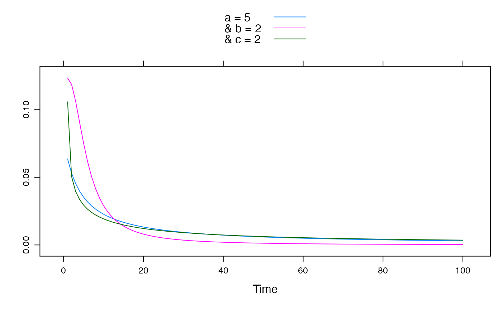

A power-law form of unit hydrograph (transfer function).
powuh.sim( U, delay = 0, a = 1, b = 1, c = 1, init = 0, uhsteps = 100, na.action = na.pass, epsilon = hydromad.getOption("sim.epsilon") )
| U | input time series. |
|---|---|
| delay | lag (dead time) between input and response, in time steps. |
| a | the time for flow to drop by half after a peak, if |
| b | persistence of the flow response; defines the recession curve tail. |
| c | curvature at half-peak point. |
| init | initial flow value(s) used in convolution filter. |
| uhsteps | number of time steps to use in approximating the unit hydrograph convolution filter. |
| na.action | function to remove missing values, e.g.
|
| epsilon | values smaller than this will be set to zero. |
the model output as a ts object, with the same
dimensions and time window as the input U.
The power law form of the unit hydrograph is:
$$H = 1 / (1 + (t/a)^{b/c}) ^ c$$
where H is the fraction of peak flow, t is the time since peak, and a, b and c are parameters.
From Croke (2006):
Parameter a is the value of t (time since peak) at which the ordinate of the asymptote \((t/a)^(-b)\) has a value of 1, b determines the persistence of the flow response and c defines the shape of the response curve near its peak. The c parameter appears twice in order to reduce interaction between the b and c parameters (in this form, the c parameter only influences the curvature near t = a, and doesn't influence the asymptote, which is determined solely by the b parameter). The time for H to decrease to 0.5 is \(a(2^(1/c) - 1)^(c/b)\). While this is a three parameter model, for \(t >> a\) only the b parameter is significant. Since the value of the a parameter is typically significantly less than one (see Table 1) the recession curve can be written as
$$H = (t_r / t)^b$$
where \(t_r\) is some reference time (\(t_r >> a\)) at which the hydrograph profile has been normalized. Thus the remaining two parameters (a and c) only influence the response curve near the event peak, and [the equation above] can be taken as a single parameter recession model.
Croke, B.F.W. (2006). A technique for deriving an average event unit hydrograph from streamflow-only data for ephemeral quick-flow-dominant catchments. Advances in Water Resources 29, pp. 493--502.
Felix Andrews felix@nfrac.org
U <- ts(c(1, rep(0, 99))) xyplot(cbind( "a = 5" = powuh.sim(U, a = 5), "& b = 2" = powuh.sim(U, a = 5, b = 2), "& c = 2" = powuh.sim(U, a = 5, c = 2) ), superpose = TRUE )